Totstandkoming Gemeentelijk Gegevensmodel
Overview
Het GGM is ontworpen op aan de hand van interviews met domeinexperts, de in Delft gebruikte applicaties en op basis van landelijke informatiestandaarden. Dit om tot een gegevensmodel te komen dat goede verankering kent met de Delftse situatie. De uitwerking van Gemeentelijke Monumenten is als voorbeeld in de handleiding opgenomen. Aangezien alle Nederlandse gemeenten in principe dezelfde wettelijke taken hebben gaan we ervan uit dat de onderliggende informatiemodellen sterk op elkaar lijken.
Uitgangspunt van de inventarisatie waren:
- De lijst met Delftse applicaties en de inventarisatie hiervan waarbij onderscheid is gemaakt tussen authentieke bronnen en overige applicaties
- De set beleidsdomeinen waar de gemeente haar taakgebied heeft
- Landelijk vastgestelde standaarden voor gegevensuitwisseling en landelijk vastgestelde informatiemodellen
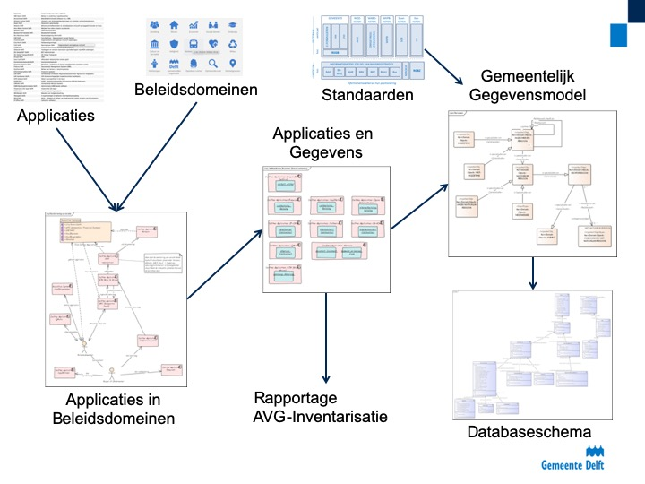
De inventarisatie in de volgende stappen uitgevoerd:
- Applicaties en Beleidsdomeinen: Interviews met experts uit de verschillen de Beleidsdomeinen: per beleidsdomein is er m.b.v. gesprekken met experts van de informatievoorziening binnen de beleidsdomeinen een inventarisatie gemaakt van de gebruikte applicaties, de betrokken gebruikers, de interactie tussen de applicaties en de gebruikers, en welke gegevens daarbij gebruikt worden.
- Applicaties en gegevens: door in de gesprekken en uit de analyse de authentieke bronnen van gegevens te identificeren, en door in de gesprekken in te zoomen op de gebruikte gegevens en door de inventarisatie van de applicaties en gegevens te hanteren zijn de gegevens binnen de authentieke bronnen geïdentificeerd. Details van de gebruikte gegevens zijn hier geinventariseerd door foto's van de schermen van de gebruikte applicaties te maken en/of analyse van het achterliggende databaseschema.
- Gemeentelijk Gegevensmodel: het gegevensmodel wordt opgebouwd door de in de vorige stap gevonden gegevens te vertalen naar objecttypen (gegevenssoorten). Landelijke standaarden dienen hier zoveel mogelijk als uitgangspunt, waarbij de nieuw gevonden gegevens worden ingepast. Veel van de gebruikte applicaties ondersteunen deze landelijke standaarden, waardoor compatibiliteit zo goed mogelijk wordt gegarandeerd.
- Databaseschema: er is generator gerealiseerd waarmee op basis van de definities in het gegevensmodel met ‘een druk op de knop’ databasetabellen (DDL) gegenereerd kunnen worden. Hiermee is het mogelijk de basis te leggen voor een datawarehouse en is het mogelijk gegevens uit de applicaties te laden waardoor confrontatie van het model met de data mogelijk is.
Informatieanalyse uitgelegd
Doel van de informatieanalyse is het vinden van de gegevens die binnen de verschillende beleidsdomeinen worden gebruikt, het bepalen van de juiste gegevensdefinities (objecttypes), en het bepalen van de relaties tussen deze objecttypes. Ondanks dat je inventariseert welke taken in een beleidsdomein worden uitgevoerd beoog je geen complete procesanalyse, we zijn perslot op zoek naar gegevens. Per beleidsdomein doorloop je steeds de hier beschreven cyclus. Het is belangrijk dat tijdens de interviews een goede inventarisatie van de taken wordt gedaan en dat uitwerking zoveel mogelijk begrijpelijk is voor de geïnterviewde. Op deze manier kan de geïnterviewde toetsen of je inderdaad correct en compleet bent.
Hierna staan kort op conceptueel niveau de verschillende stappen in het analyseproces uitgelegd die je per beleidsdomein uitvoert. Daarbij is er een voorbeelduitwerking beschikbaar in de vorm van Gemeentelijke Monumenten
Inventariseren Applicaties en Beleidsdomeinen
Doel van deze stap is het bepalen van een aantal zaken doormiddel van interviews, met als startpunt de reeds geinventariseerde applicaties voor dit domein:
- Scope, doel en achtergrond van werkzaamheden binnen het beleidsdomein
- De taken die (moeten) worden uitgevoerd binnen het beleidsdomein
- De applicaties en andere administraties die worden gebruikt
- De taken die met de applicaties worden uitgevoerd.
Voorbeeld uitwerking van deze fase is hier en hier te vinden (in twee delen uitgewerkt), en levert onder andere de volgende uitwerking.
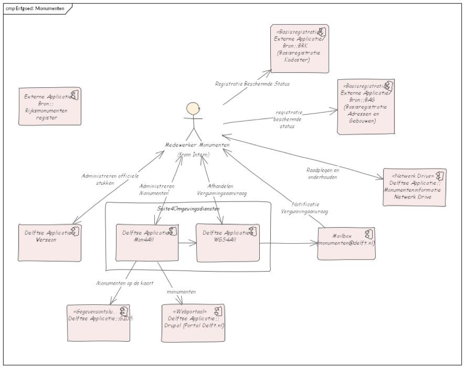
Inventariseren Applicaties en Gegevens
In de vorige stap is een limitatieve lijst van de gebruikte applicaties en de taken die met deze applicaties worden uitgevoerd. Doel van deze stap is te bepalen welke gegevens in deze applicaties worden geadministreerd en voor welke gegevens deze applicaties authentieke bron zijn. Zo ontstaat er een compleet beeld van de relevante gegevens binnen het domein.
Tijdens de interviews kun je foto's maken van de gebruikte applicaties, je kunt de achterliggende databaseschema's analyseren en gebruik maken van handleidingen bij de applicaties. Dit afhankelijke van de situatie en beschikbaarheid. De resultaten verwerk je in je analysedocument, zodat je dit kunt toetsen bij de geïnterviewden.
Voorbeeld uitwerking van deze fase is hier te vinden, en levert onder andere de volgende uitwerking. Je ziet hierin de verschillende applicaties met daarin de gegevens.

Uitbreiden Gemeentelijk Gegevensmodel
In de vorige stap is geinventariseerd welke gegevens binnen het beleidsdomein worden gebruikt. In deze stap wordt deze inventarisatie gebruikt om een vertaling te maken naar objecttypes. Naast de geïnventariseerde gegevens bouw je hier zoveel mogelijk voort op (landelijke) gegevensstandaarden. De lijst met landelijke standaarden die in het Gemeentelijk Gegevensmodel zijn toegepast vind je hier. Als er een landelijke standaard ontbreekt voeg je die aan het model toe, door deze te importeren of deze met de hand over te nemen. Als je voortbouwt op een standaard die al in het model zit, hoeft dit uiteraard niet ;).
In deze stap maak je een uitbreiding op het Gemeentelijk Gegevensmodel door per gevonden gegeven een objecttype aan te maken, of her te gebruiken uit het reeds bestaande model. Let hierbij op dat je de gelaagde opbouw respecteert. Deze objecttypes en de daarbij horende relatie werk je uit in één of meer diagrammen.
Voorbeeld uitwerking van deze fase is hier te vinden, en levert onder andere de volgende uitwerking.
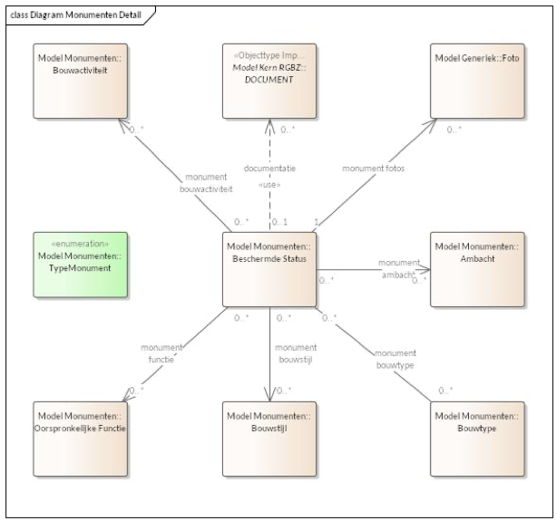
Genereren Databaseschema
Om het net uitgebreide deel van het Gemeentelijk Gegevensmodel in een database te gebruiken kun je het genereren naar DDL. Selecteer of kopieer hiervoor het deel van het Gemeentelijk Gegevensmodel dat je naar DDL wilt genereren, en volg deze handleiding.
Uitwerking informatieanalyse met Enterprise Architect
Hoe Enterprise Architect is gebruikt bij de uitwerking van het GGM is hierna te lezen.
Voor het modelleren
Voordat je start met modelleren moet je een Enterprise Architect project hebben waarin je werkt. Hiervoor kun je het voorbeeldbestand (Gemeentelijk_Gegevensmodel.eap) gebruiken dat is meegeleverd.
Modelleren Applicaties en Beleidsdomeinen
Veel van het resultaat van deze stap is tekst, dat behoeft geen uitleg. Voor het modelleren in Enterprise Architect doorloop je de volgende stappen:
- Open in Enterprise Architect het project waar je aan wilt werken.
- Maak onder de 'root node' een nieuwe map aan voor de componenten.
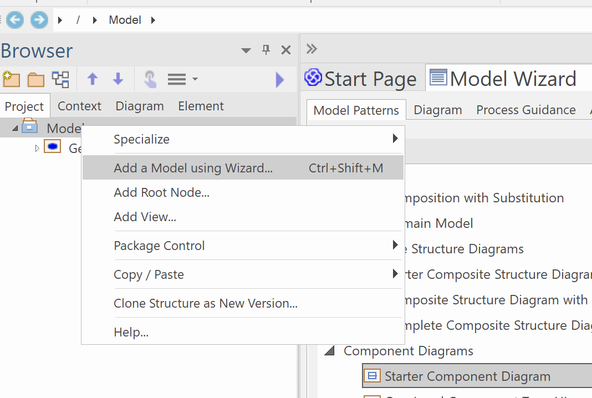
3. Kies 'Component Diagram' waarmee je een nieuwe map naast het 'Gemeentelijk Gegevensmodel' toevoegt.
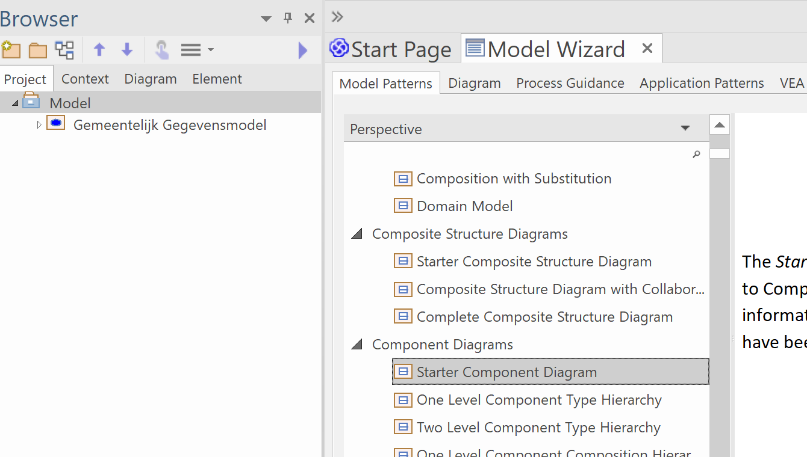
4. Voeg onder de nieuwe map de mappen 'Diagram' en 'Model' toe, en maak onder 'Model' mappen aan voor actoren en applicaties.
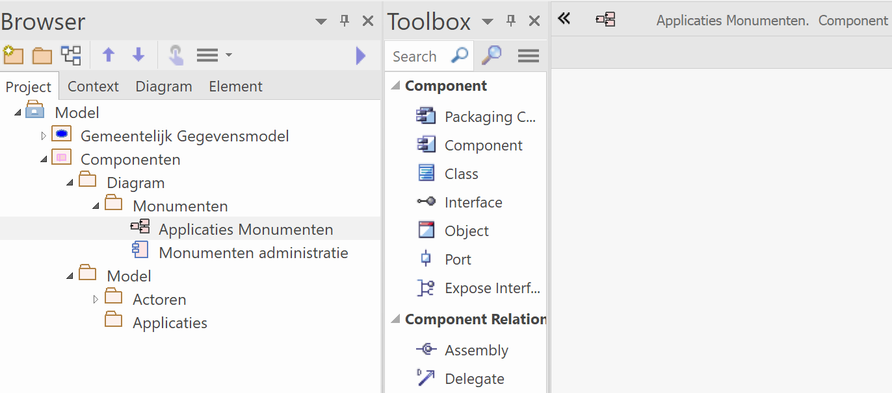
4b. Om de diagrammen op hoofdlijnen te houden en het tonen van details van elementen te onderdrukken, kun je deze uitzetten. Dubnelklik hiertoe op het diagram en open de 'Properties'. Hier kun je het tonen van elementdetails uitzetten.
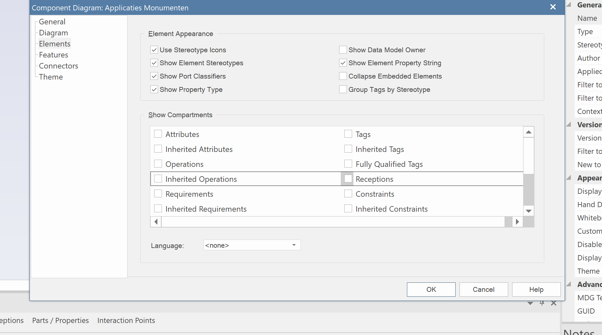
5. Breidt het componentendiagram uit met de modellering die je onderhanden hebt. Hier is een heeeeeeeel eenvoudige uitwerking voor Monumenten toegevoegd. Voeg hiervoor ook een 'Use Case' diagram toe, alhoewel we geen echte use cases uitwerken hier. Al naar gelang de situatie kun natuurlijk meerdere diagrammen maken.
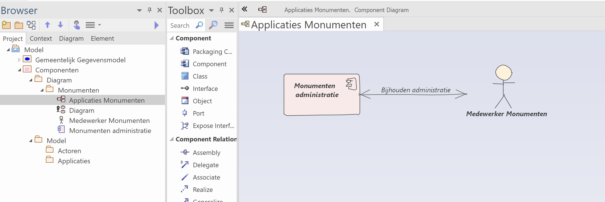
6. Als je klaar bent sleep je de componenten en actoren naar de eerdere gemaakte mappen, zodat je ze kunt hergebruiken voor toekomstige modellen.
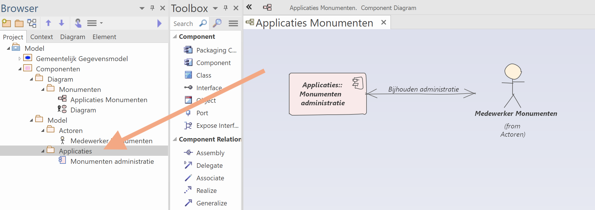
7. Klaar! Door naar het modelleren van de gegevens in de applicatie.
Modelleren Applicaties en Gegevens
Bij het modelleren van applicaties en gegevens werk je uit welke gegevens er in welke applicatie zitten. Dit doe je door gegevens (in EA in de vorm van objecten) op basis van de resultaten in de analyse in de applicaties te plaatsen (in EA in de vorm van componenten)
Hiertoe doorloop je de volgende stappen:
1. Maak een nieuw 'UML Structural Component'-diagram aan.
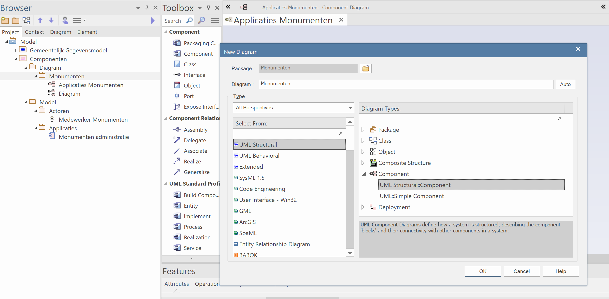
2. Sleep hier de eerder gemaakte applicatie in. In het voorbeeld de applicatie 'Monumentenadministratie'.
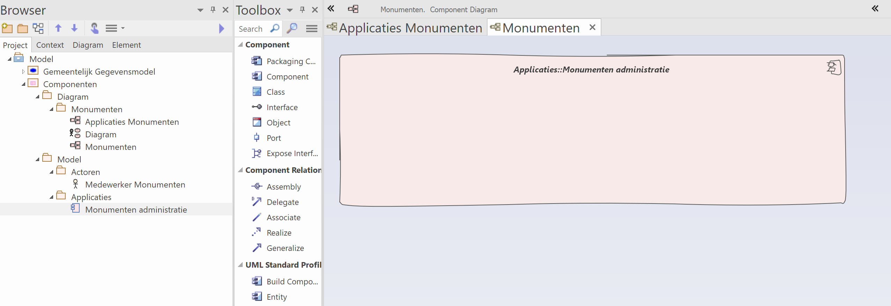
3. Sleep hier voor elk soort gegeven een object in, en geef ze de juiste naam. In het voorbeeld drie soorten gegevens. In de praktijk zul je waarschijnlijk meer gegevenssoorten gebruiken.
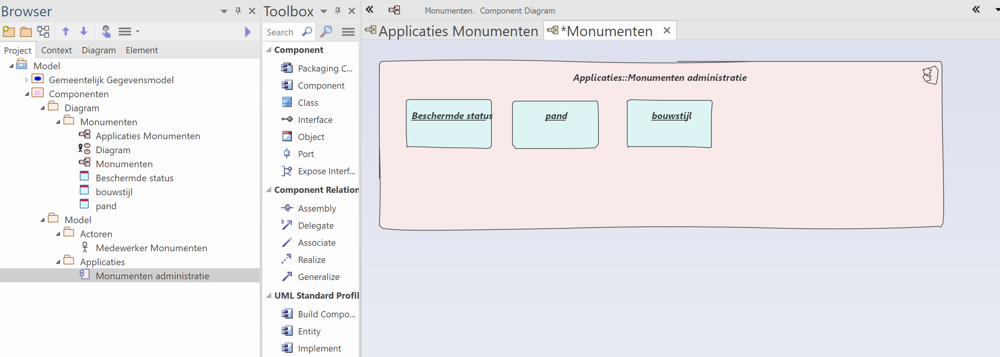
4. Als laatste: sleep de gegevensobjecten in het applicatiecomponent. Dit zodat je bij verdere analyse kunt zien welke gegevens uit verschillende domeinen in een applicatie zitten. Verder kun je zo rapportages maken over de applicaties en de gegevens.
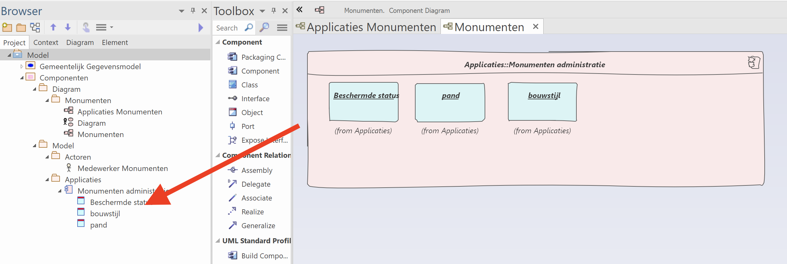
5. Klaar! Op naar de volgende stap.
Uitbreiden Gemeentelijk Gegevensmodel
Nadat alle relevante gegevens gevonden zijn kun je door naar de volgende stap: het aanmaken van nieuwe objecttypen en het relateren van gegevens aan bestaande objecttypen. Kijk goed naar de mogelijkheden die de codegeneratietemplates bieden, zodat je later niet in de knoei komt als je wilt transformeren naar tabellen.
Het uitbreiden verloopt in een aantal stappen:
1. Open het 'Gemeentelijk Gegevensmodel' en maak een map aan voor het onderdeel dat je gaat uitwerken. In het voorbeeld is dat 'Erfgoed: Voorbeeld'. Maak onder die map nog twee mappen aan: 'Diagram' en 'Model Voorbeeld'. Nu heb je de plek aangemaakt waar je de objecttypes gaat aanmaken.
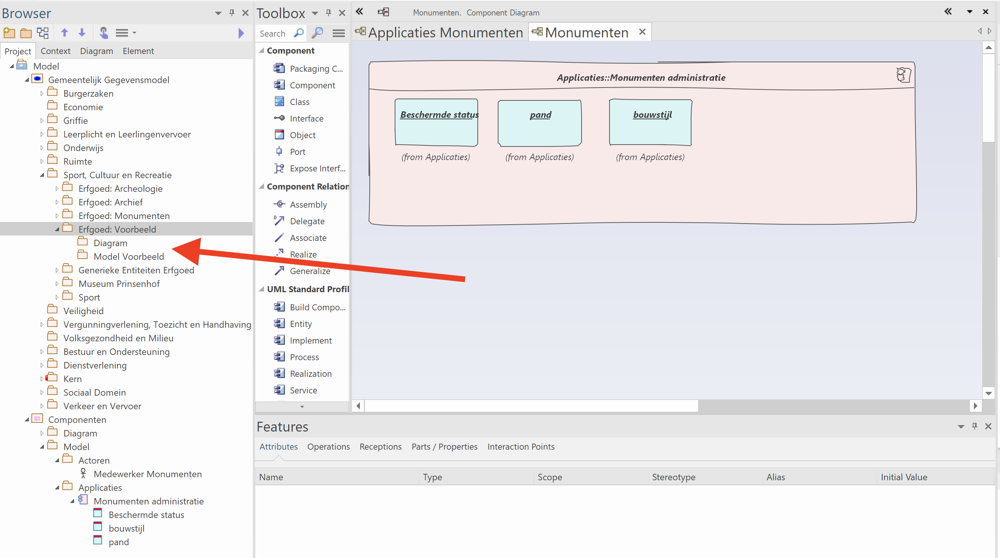
2. Maak voor een van de gevonden gegevenssoorten een classe aan, en sleep deze naar 'Model Voorbeeld'. Dit moet je eenmalig doen, omdat de map 'Model Voorbeeld' in het verdere verloop onzichtbaar blijft.
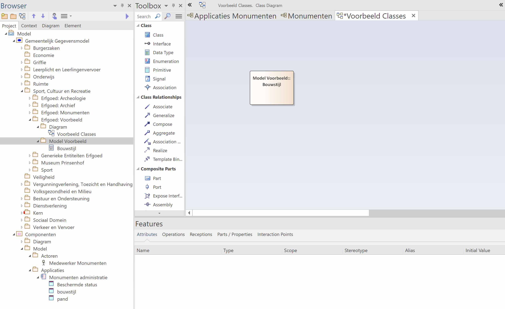
2b. Om het classediagram overzichtelijk te houden kun je het tonen van classedetails, zoals attributen en methodes, uitzetten. Dubbelklik hiervoor op het diagram en vink in de properties deze opties uit.
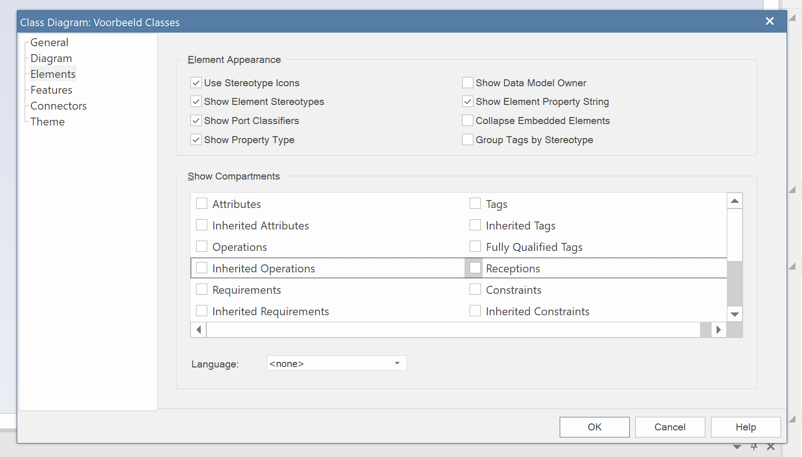
3. Selecteer het objecttype waarvoor je zojuist een objecttype hebt aangemaakt en toets Ctrl-L om een 'Classifier' voor dit gegevenssoort aan te maken. Ga naar de zojuist aangemaakte map en selecteer het objecttype dat je zojuist hebt aangemaakt, en druk op 'OK'.
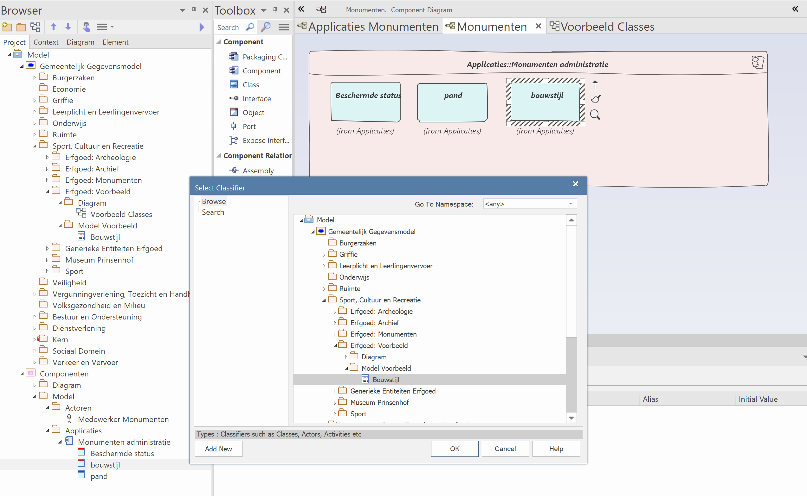
4a. Nu kun je met het verdere modelleerproces doorgaan. Herhaal hiervoor voor alle de objecttypes die je wilt uitwerken. selecteer het objecttype en toets Ctrl-L om een 'Classifier' voor het gegevenssoort aan te maken. Ga naar de zojuist aangemaakte map en: selecteer het objecttype dat je wilt gebruiken of toets 'Add New' en type de naam van het nieuwe objecttype, en druk op 'OK'.
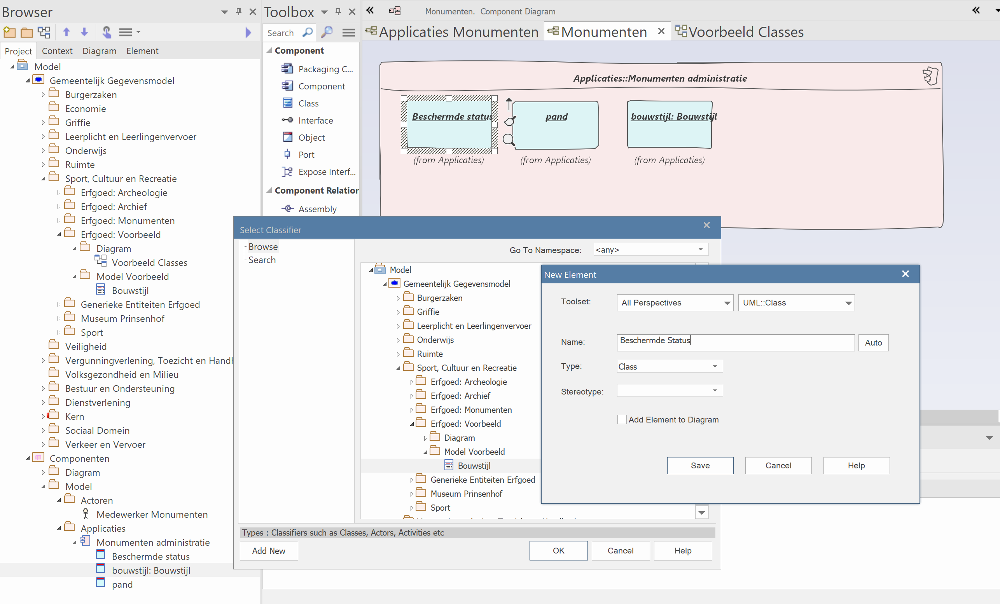
4b. Je kunt de objecttypes ook een classifier aanmaken naar een reeds bestaand objecttype. In het voorbeeld voor 'Pand'. Toets weer Ctrl-L en navigeer in het Gemeentelijk Gegevensmodel naar het beoogde objecttype. In het voorbeeld naar 'PAND' in het RSGBPlus.
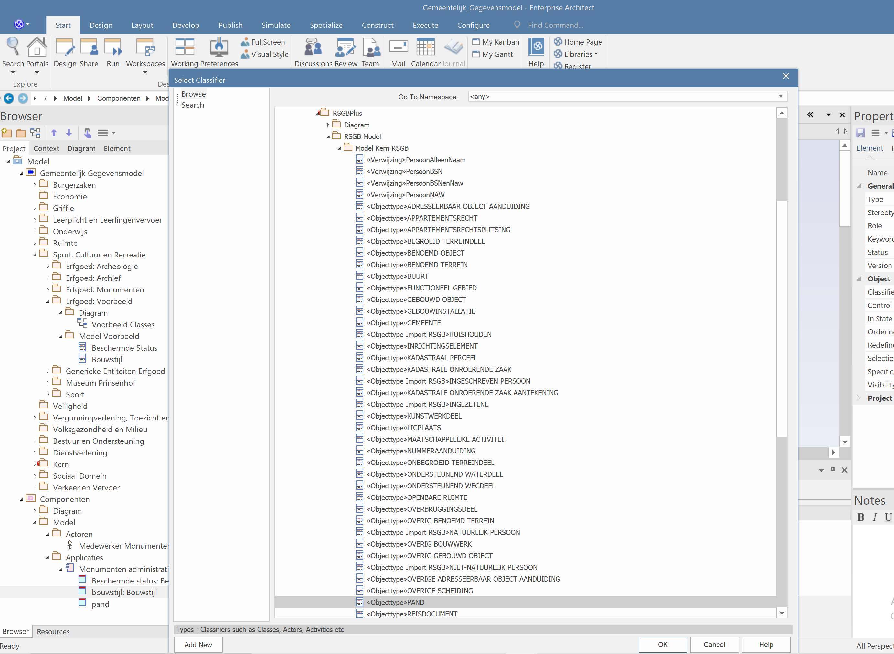
5. Als je alle objecttypes compleet hebt kun je verder met de classdiagram. Sleep hier de verschillende objecttypes op.
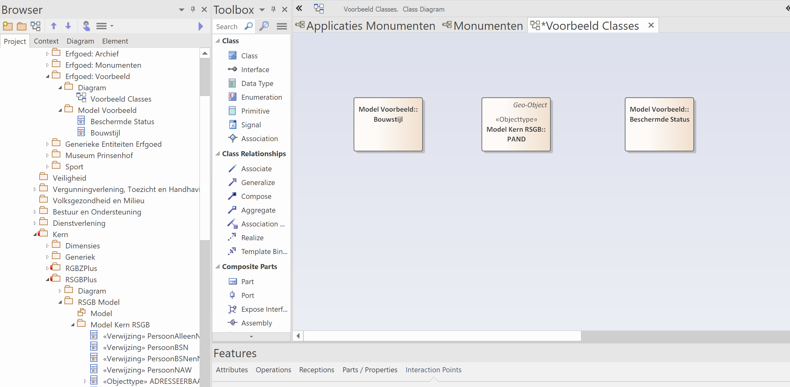
6. Maak de relaties aan tussen deze objecttypes.
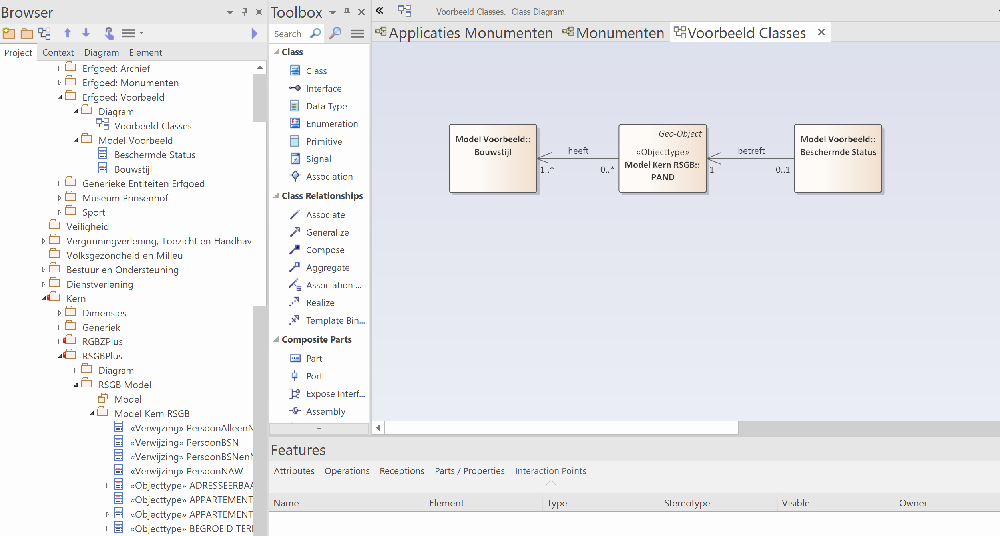
7. En als laatste voeg je de attributen toe aan de zojuist gecreëerde objecttypes. Gebruik hiervoor de foto's die je van de applicatie hebt gemaakt, reeds bestaande standaarden of het databaseschema van de applicatie.
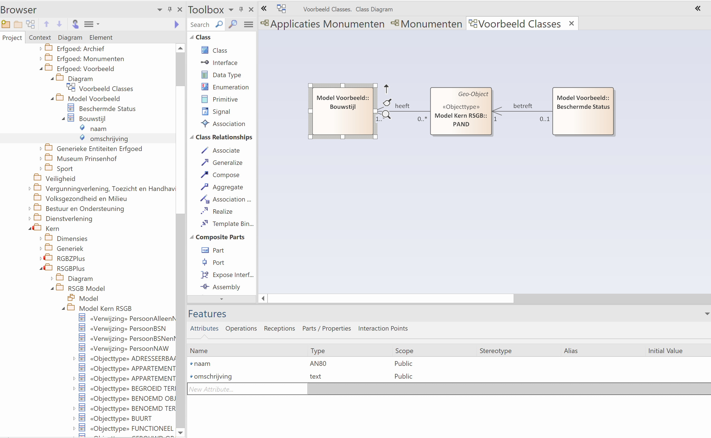
8. Klaar! Je hebt een hele cyclus voor het uitbreiden van het Gemeentelijk Gegevensmodel doorlopen.
Databaseschema maken
Om het net uitgebreide deel van het Gemeentelijk Gegevensmodel in een database te gebruiken kun je het genereren naar DDL. Selecteer of kopieer hiervoor het deel van het Gemeentelijk Gegevensmodel dat je naar DDL wilt genereren, en volg deze handleiding.